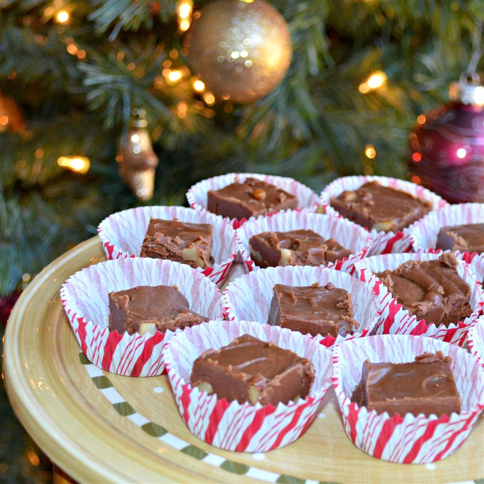

The Original Fantasy Fudge

Description
This recipe used to be found on the back of a well known brand of marshmallow cream. Many were surprised when it
was changed. This is the original! You may find that most packages of chocolate chips are 10 ounces now; 12
ounces of chocolate chips is roughly 2 cups.
ingredients
- 3 cups white sugar
- ¾ cup margarine
- ⅔ cup evaporated milk
- 1 (12 ounce) package semisweet chocolate chips
- 1 (7 ounce) jar marshmallow creme
- 1 cup chopped walnuts
- 1 teaspoon vanilla extract
Steps
- Grease a 9x13-inch pan.
- Mix sugar, margarine, and evaporated milk in a large, heavy saucepan over medium heat, stirring to dissolve
sugar. Bring mixture to a full boil for 5 minutes, stirring constantly.
- Remove from heat and stir in chocolate chips until melted and thoroughly combined. Beat in marshmallow
creme, walnuts, and vanilla extract. Transfer fudge to the prepared pan and let cool before cutting into
squares.